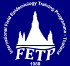

SethapongLertsakulbunlue
ร.ท. นพ.เสฏฐพงศ์ เลิศสกุลบรรลือ
Lecturer in Pharmacology at Phramongkutklao College of Medicine, Bangkok, and resident in Preventive Medicine (Epidemiology). I study how medical students learn and are assessed, how outbreaks unfold in the field, and what snake venom does to the people it reaches.
Who's this?
I trained at Phramongkutklao College of Medicine, graduating in 2020 with first-class honours and the gold medal. After an internship at Fort Wachirawut Hospital, I joined the Department of Pharmacology as a lecturer in 2022, and in 2024 began residency in Preventive Medicine (Epidemiology). My work moves between the classroom, the lab and the field: fairer exams, faster outbreak answers, and better snakebite care.

Field Epidemiology Training ProgramFETP ThailandCitations per year, read from the Google Scholar chart, so yearly values are approximate. 2026 to date. Updated October 2026.
Things I've built
Web tools I designed and shipped. Both run entirely in the browser, so no personal data leaves the user's device.
SARI Surveillance Dashboard
Estimates severe acute respiratory infection (SARI) activity from routine hospital ICD-10 admission data, using models built on sentinel surveillance. Files are processed in the browser, so patient data never leaves the hospital.
PLB Horoscope
A Thai daily horoscope app based on traditional Thai astrology: daily readings by ascendant, couple compatibility, lucky colours and numbers, and a 28-day fortune chart. Everything is calculated on your own device.
What I study
Pick a topic to jump to its papers.
Selected work
So far
Experience & training
- 2024 – nowResident, Preventive Medicine (Epidemiology)Thai board residency training
- 2022 – nowLecturer, Department of PharmacologyPhramongkutklao College of Medicine, Bangkok
- 2021Medical internFort Wachirawut Hospital, Nakhon Si Thammarat
- 2015 – 2020Doctor of MedicinePhramongkutklao College of Medicine. First-class honours with gold medal.
- 2008 – 2014Secondary schoolSamsenwittayalai School, Bangkok
Talks & awards
- 2025 · OralChina FETP Annual ConferencePertussis amid ongoing conflict and missed maternal vaccination: an infant death investigation in Tak Province
- 2025 · OralSAFETYNET ConferenceAn MMR-related mumps cluster among practical nursing students, Bangkok
- 2024 · OralThai Medical Education ConferencePeer assessment of ECG interpretation in simulation-based ACLS stations
- 2024 · PosterOttawa ConferenceEvaluating an undergraduate medical research module with the CIPP model
- 2023 · OralJapan Society for Medical EducationBeliefs about medical research and their impact on publication: a structural equation modelYoung Investigator Award
- 2023 · PosterAMEE ConferenceAssociation for Medical Education in Europe
Sethapong.ler@pcm.ac.thEarthyboy12@gmail.com